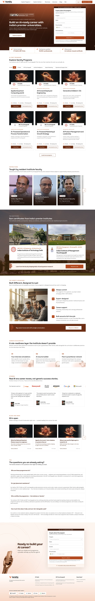

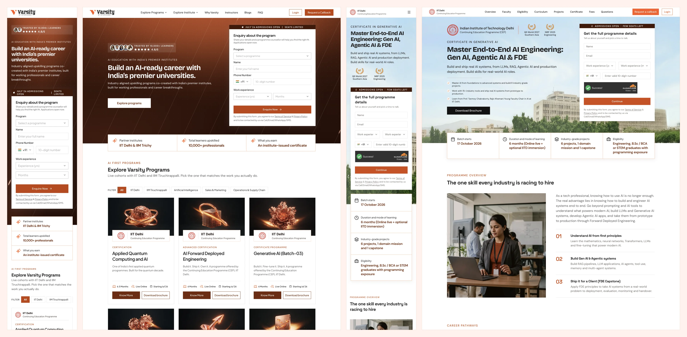


First, a little context
About Varsity
Varsity by InterviewBit launches professional certificate programs with institutions such as IIT Delhi and IIM Trichy. Each program needs its own page, and that page has to turn interest into a qualified lead.
Overview
Varsity was launching partner programs faster than it could build pages for them. I designed a Storyblok publishing system so Marketing and SEO could launch and improve approved program pages without a new design and engineering cycle each time.
My role
I was the Lead Product Designer. I owned the design direction for the program-page system, from the learner decision sequence to the handoff model for Marketing and SEO.
Team
Outcomes
10-12 days → 3-4 hrs
Design, approvals, engineering, and go-live per program
56,135
Enquiries across six programs, as of 3 Oct 2026
389
Paid enrolments across six programs
The pages that shipped
Every page below runs on the same Storyblok system.
The Varsity homepage
Lists every partner program and routes learners to its page.

A partner program page
IIT Delhi's Generative AI program, live on the fixed page order.

Desktop and mobile together
Every section was designed in both layouts before it became a component.

Varsity needed to launch partner
programs at campaign speed
The program page sat at the centre of Varsity's growth motion. One page had to make a high-consideration education offer clear and credible enough for someone to take the next step, and it had to do that inside a campaign window.
Learners
Understand the program, judge the institution, then enquire or enrol.
Marketing and SEO
Launch campaigns, tune copy and metadata, and improve live pages.
Every launch put three demands on the page.
Clarity
Curriculum, faculty, outcomes, eligibility, pricing, and admissions had to read as one decision path.
Trust
Partner claims, brand expression, faculty details, certificates, pricing, and program facts had to be accurate.
Speed
Pages had to ship on campaign timelines, and Marketing and SEO needed to improve them without restarting the design process.

The existing process could hold two of the three. Speed cost consistency, and consistency cost speed. Production time was the visible cost. The expensive one was slower learning: fewer propositions tested, fewer improvements shipped.
Every change goes back to Design
Approved brief, fixed components, repeatable checks
I owned the design direction. Engineering built it as reusable Storyblok components, so Marketing and SEO could launch and improve approved pages without waiting on Design or Engineering.
From hand-built pages
to one program-page system
Varsity's first program pages were hand-built in raw HTML. Each new program went from brief to Design to Engineering, then back through review and changes.
I started with the proposal document and university discussions, then reviewed how competing programs organised their pages and guided learners towards enquiry. The first approval draft was a working HTML page built with Claude, so the team could review the full experience before Engineering began.
Engineering then connected the backend and turned the approved structure into reusable Storyblok components. Every page went through live-page testing before it was published.
Six launches in, Varsity looked
like six different products
The pages looked different at the content level, but structurally they were very similar. Each launch rebuilt the same sections by hand, and section order, curriculum layouts, image styles, and copy patterns drifted from page to page.
Four issues created this problem
Launch speed slowed campaigns
A page took 10 to 12 days from design to production. Campaign windows are shorter than that, so propositions went untested.
Experience drift
Section order, curriculum layouts, image styles, and copy patterns changed from page to page.
Team dependency created queues
Routine campaign, content, and SEO changes still needed Design or Engineering, for work that should have been repeatable.
Launch quality was fragile
Checks happened late or from recall, so heavy images, missing metadata, broken CTAs, or cross-brand errors could reach production.
What I heard from the teams
The inputs came from proposal documents, university discussions, and the questions Marketing and SEO kept raising during launches. Each team described the same launch from its own side of the work.
Below are the synthesised notes from those discussions. They represent recurring themes rather than verbatim quotes.
Growth team notes
Marketing note
We need to adapt approved propositions, copy, and creative for each program and launch on campaign timelines.
SEO note
We need control over metadata, page structure, and search readiness without breaking the page.
Build team notes
Design note
Page order, visual direction, layout behaviour, and content hierarchy have to hold across programs.
Engineering note
These pages are near-identical. We need one maintained component system for all of them.
"Learners need a page that moves them from interest to understanding, then trust, then action. Every program, in the same order."
Constraints I had to work with
01
Protect partner credibility
These pages represented IIT Delhi and IIM Trichy. Institutional claims, faculty details, certificates, logos, pricing, and program promises had to stay accurate.
02
Autonomy inside a fixed structure
Marketing and SEO needed independence, with guardrails on layout, brand, forms, and metadata. A blank canvas would have moved the drift into a new tool.
03
Ship reusable components
Cutting repeated engineering work meant the approved design had to become maintainable Storyblok components for many program variants.
Three principles behind the launch system
I optimised for controlled flexibility. Teams could change program facts, curriculum, pricing, proof, media, and SEO inputs. Component behaviour, page order, approval gates, and QA logic stayed fixed. Based on the team discussions, I followed three principles:
Keep the page order predictable.
Give teams flexibility inside approved boundaries.
Make launch quality repeatable.

Two directions I ruled out
before the final system
Another landing page per program
The request was a new landing page for each new program. Designing it well would have shipped one good page and left the next launch exactly where this one started.
Why it failed
A page still takes 10 to 12 days from design to production. Campaign windows are shorter.
Why it failed
Engineering would keep maintaining near-identical pages one by one.
Why it failed
Routine campaign, content, and SEO edits would still wait on Design or Engineering.
An open Storyblok canvas
The opposite fix was full freedom: give Marketing every block in Storyblok and let each team compose its own page. It removed the queue and brought the drift straight back, this time inside the CMS.
Why it failed
A blank canvas reproduces the drift problem in a new tool.
Why it failed
Partner claims, pricing, and faculty details have to stay accurate on every page.
The final system,
piece by piece
1. A fixed page order made every program read the same way
Problem identified
Section order, curriculum layouts, image styles, and copy patterns changed from page to page.
What I did
I fixed the page into four groups and locked their sequence: Entry, Learning story, Trust and fit, and Conversion and close. Content changes by program. The logic does not.
How the order was decided
A learner has to understand the program, decide on cost and admissions, then enrol. The four groups follow that sequence, whatever the program content.
Orient the learner and state the proposition.
NavbarHeroOverviewCurriculum, outcomes, faculty, and tools.
CurriculumProjectsFacultyToolsLearning objectivesHow you learnCredibility, eligibility, and cohort fit.
CertificateWho should enrolAdmissionsWhy nowCampus immersionPricing questions and paths to enquiry.
PricingFAQFormsCTAFooter2. A reusable curriculum module kept long syllabi scannable
Problem identified
Curriculum was laid out differently on every page, and long syllabi were hard to scan.
What I did
I built curriculum as a reusable module with collapsed and expanded states. It sits with projects, faculty, tools, and learning objectives in the Learning story group.
3. Lead capture became a set of states, one for each level of intent
Problem identified
Learners arrive with different levels of intent, and a page could reach production with an incorrect form.
What I did
I designed enquiry, request-a-callback, OTP verification, brochure download, and validation states, so the same page could meet a browsing visitor and a ready-to-talk learner.
4. Admissions and payment states carried learners past the form
Why it mattered
The page's job ended at a lead. The learner still had to register, pay, and enrol.
What I did
I designed responsive states from application submission and university review through admission, fee review, offers, payment confirmation, successful enrolment, and rejection.
Personal information
Step 1 of a four-step application.
Review application
Every detail in one place before submitting, with edit links per section.
Application submitted
A clear confirmation the moment it goes through.
Under review
A status timeline, what happens next, and a counsellor one tap away.
Offer and payment
The offer, a fee breakdown, and two routes: pay now or apply for a loan.
Complete payment
Learners choose the amount, with the minimum and fee details in view.
Enrolled
Payment confirmed and enrolment complete, with dashboard access next.
Rejected
A plain outcome and a direct route to the counsellor.
5. Shared components made the guardrails visible
Problem identified
Marketing and SEO needed room to change pages, and an open canvas would have brought the drift back.
What I did
Cards, navigation, tabs, CTA bands, curriculum modules, accordions, and shared Storyblok components separated editable properties from the parts that stayed locked.
6. Human approval gates stayed in the system
Problem identified
Institutional claims, learner promises, pricing, imagery, and partner representation need accountable judgment.
What I did
I kept approval with people. Automation prepares the work, and an accountable person approves what ships.
Work that went beyond
the brief
The brief was a page system. Nobody asked for a quality system. Launch standards were hard to hold when checks ran on memory, and the same mistakes repeated across pages. I wrote the production rules down as three playbooks that run at three different moments.
7. A page builder that turns an approved brief into a first draft
What I did
I wrote
storyblok-program-page. It turns an approved program brief into a complete first draft using the fixed page order, reusable components, house style, forms, and metadata.Where it fits
It is the first of three stages. The draft still goes through both audits and human approval before it ships.
storyblok-program-pageApproved brief in, complete first draft out, in the fixed order.
storyblok-site-auditImage weight, metadata, structured data, brand safeguards.
varsity-page-auditLinks, CTAs, enquiry modals, forms, comprehension.
8. Separate audits before launch and on the live page
What I did
storyblok-site-auditchecks image weight, accessibility, search metadata, social previews, structured data, partner-brand safeguards, and publishing readiness.varsity-page-auditthen tests the rendered page in the browser: links, CTAs, enquiry modals, forms, and learner comprehension.Why two audits
Each stage fails differently. A page can be correct inside the content platform and still have a broken form on the live site.
What changed
Page assembly, pre-launch checks, and live QA each got their own stage and owner. Previously all three collapsed into one review the day before launch.
Impact after release
System outcomes
Page build and approvals per program, down from 10 to 12 days
Page assembly, pre-launch audit, and live QA, each with its own owner
Marketing and SEO launched and improved approved variants with less day-to-day dependency on Design and Engineering
Program outcomes across six programs, as of 3 Oct 2026
Enquiries across six programs
Applications submitted
Paid enrolments
Of submitted applications received an offer
Lead-to-payment on the flagship AI Forward Deployed Engineering program, 263 enrolments
Observed visitor-to-lead conversion on the live pages
Numbers I'll walk through on a call
Lead quality by program
On a callApplication start to submit
On a callOffer to payment by program
On a callLead-to-payment across all six programs
On a callThe system supported these outcomes through consistency, launch quality, and iteration speed. Traffic quality, campaign strategy, program proposition, pricing, and the wider admissions process also influenced conversion. Page-level traffic and program-level breakdowns can be discussed separately.
What I would do
differently next time
- Define page-level success metrics before launch. The system had strong operational and conversion outcomes, but I measured them after the fact. I would set measures per page ahead of time: visitor-to-lead, lead-to-payment, CTA engagement, form completion, drop-off by section, and page speed.
- Start from one approved intake. Today the system starts at the program page, once the brief is already written. The next version starts earlier: Strategy or Marketing submits the university proposal and SEO inputs as one request, and that source prepares the brochure, the program page, and the first campaign assets together. This is in progress.